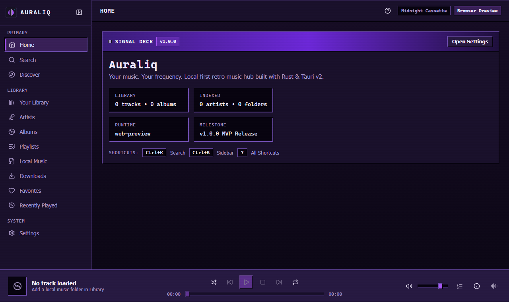

Local FTS5 Music Engine
Fast SQLite full-text indexing, incremental folder scanning, lofty tag
& cover art extraction, M3U/M3U8/PLS import/export, smart playlists, and
non-destructive duplicate detection.
A 1990s retro-inspired desktop music hub built with Rust & Tauri v2. Combine your local FLAC/MP3/OPUS library, compliant open online streams, a 5-band biquad equalizer, and live CSS customization—with zero ads and zero telemetry.

Fast SQLite full-text indexing, incremental folder scanning, lofty tag
& cover art extraction, M3U/M3U8/PLS import/export, smart playlists, and
non-destructive duplicate detection.
symphonia + cpal playback thread with 5-band biquad
equalizer, 6 presets, ReplayGain normalization, gapless playback, and configurable
crossfade (0–8s).
Stream Audius, Internet Archive, Radio Browser, and Direct HTTPS URLs out of the box, plus optional BYOK Jamendo, Freesound, and YouTube metadata stored in Windows Credential Manager.
Resumable HTTP Range downloads exclusively for permitted open/CC sources,
lofty auto-tagging, and a separate LRU temporary stream cache with
Offline Mode.
Automatic offline .lrc sidecars, optional opt-in LRCLIB synced lyrics
with click-to-seek, and 5 Canvas visualizers: Segmented LED Bars, CRT Scope, Cassette,
Dual VU, and CRT Matrix.
Zero-radius beveled purple hardware chrome, 5 built-in presets, 10-color palette
overrides, typography presets, sanitized
<style id="auraliq-user-css">
editor, and JSON theme import/export.
Install Auraliq for your Windows user account with the NSIS installer, or run the standalone Portable ZIP anywhere with zero installation.
Get-FileHash .\Auraliq_1.0.0_x64-setup.exe -Algorithm SHA256
Requires Node.js 22+, pnpm 10+, Rust stable MSVC, and WebView2 Runtime.
git clone https://github.com/JustyPixels/auraliq.git cd auraliq pnpm install pnpm build pnpm tauri dev
| Source | Search | Playback | Download | Offline Cache | Auth |
|---|---|---|---|---|---|
| Local Library | Yes (FTS5) | Yes (Symphonia) | N/A | Always Local | None |
| Audius | Yes | Yes (320 kbps) | No | Allowed (LRU) | None |
| Internet Archive | Yes | Yes (Stream) | Permitted | Allowed (LRU) | None |
| Radio Browser | Yes | Yes (Live Radio) | No | No (Live Only) | None |
| Direct Audio URLs | N/A | Yes (SSRF-Checked) | No | No | None |
| Jamendo | Yes | Yes (CC MP3) | Artist-Permitted | Allowed (LRU) | BYOK Client ID |
| Freesound | Yes | Yes (CC Previews) | No | Allowed (LRU) | BYOK API Key |
| YouTube Data API v3 | Yes | External Watch Only | No (Prohibited) | No (Prohibited) | BYOK API Key |
Research report, Tauri v2 + React 19 scaffold, branding, 5 themes, persistent shell.
SQLite FTS5 library, lofty tags, symphonia +
cpal
playback, SMTC media keys, smart playlists, duplicate matching.
Modular ProviderRegistry, keyring BYOK auth, Audius,
Internet Archive, Radio Browser, Download Manager, LRU Cache.
1990s beveled purple UI, Theme & Safe Live CSS editors, 5-band biquad EQ, ReplayGain, Gapless, Crossfade, opt-in LRCLIB lyrics, 5 visualizers.
Retro GitHub Pages site, 0-vulnerability cargo audit &
pnpm audit, SSRF/filename hardening, idle & batch scan optimization.
Automated Windows NSIS Installer, Portable ZIP, SHA-256 checksums, release notes, and live documentation.
Auraliq was built to put the listener back in control: prioritizing personal local libraries, open integrations, deep visual customization, and zero advertisements inside a fast native Rust desktop shell.
Zero telemetry by default. Optional API keys live in Windows Credential Manager
(keyring). Remote stream and download URLs are validated against SSRF and
private-IP blocklists, and live CSS blocks external network imports.
No. Auraliq strictly respects platform Terms of Service. Downloads are enabled only for open or artist-permitted sources like Internet Archive and Creative Commons Jamendo tracks. YouTube opens externally for playback.
Yes. Your local music library, SQLite FTS5 search, playlists, 5-band EQ, local
.lrc sidecar lyrics, and LRU-cached tracks work offline, and you can
toggle Offline Mode in Downloads & Cache.
MP3, FLAC, WAV, OGG/Vorbis, Opus, AAC/M4A, and ALAC via symphonia. WMA is
explicitly unsupported and rejected cleanly.
No. Listening history stays in your local SQLite database, and optional BYOK keys for Jamendo, Freesound, or YouTube are stored in Windows Credential Manager.